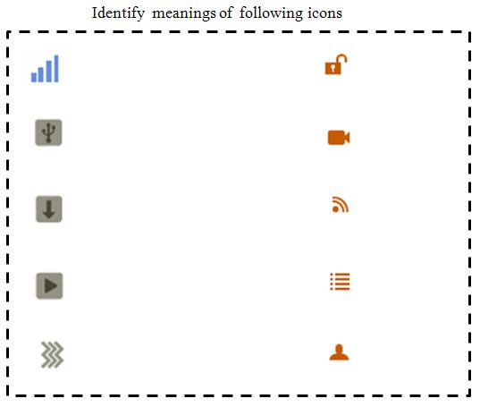

welcome to Icons in Graphical User Interfaces(GUI)

After performing this experiment
1.You will understand icon design heuristics.2.You will be able to design or create icons effectively.

Icons are graphical representation of objects or actions. They are part of the visual language and communicate large information in a single glance which otherwise may need number of words.
There are two essential aspects of icon design
- Aesthetics (communication efficiency)
Construction (realization & reproduction using digital medium)
Aesthetics is not only about looks and attractiveness; it is about how efficiently the icon functions vis-a-vis the human user. An icon can be very creative and good looking but can miserably fail in communicating the right meaning. A poor icon design may lead to human errors or accidents. Imagine a save icon in the shape of a basket being confused with a storage icon because visually a ‘basket’ represents it. The semantics of an icon - (what meaning a graphic symbol communicates) can therefore be creatively destructive. Some other factors that also contribute to aesthetics are shape, color, simplicity, order and proportions.
Construction aspect of an icon design is equally important. Vector based image construction is far more easy for computation, scaling, refreshing and display compared to pixilated construction. Pixilated icons require heavy sizes and have limited animation capabilities. On the other hand vector based icons may not be suitable for all situations and screen environments.
You should create separate icon sets for high, medium and low pixel density screens.
Pixel density of a mobile phone screen is calculated as follows:
Specifications: display size=3.7 ”(diagonal) / resolution= 480 x 800 pixels
Pixel density (PPI) = pixels per inch
Width: height ratio is same as 1: 800/480
Thus width= 1.9” and height=3.175” (By Pythagorean theorem and diagonal)
PPI= 480 divided by width of 1.9 or 800 divided by 3.175 to give 252ppi.
Human eye cannot distinguish the difference in PPI when the figure reaches a saturation point of about 250ppi or 300ppi at the most.
In this experiment, as an introduction to conceptualizing icons for a computer Graphical User Interface (GUI)- you will learn how to imagine, visualize and construct a pixel based icon to represent an object or action. It needs to be noted that there is no one single correct answer to the quest of creating an icon. Three different students can come up with three different icon designs that are equally creative, equally valid and equally rated as good.
Icons can be in the form of 2-dimensional flat symbolic image or 3-dimensional. They can be static or animated. Icons can be accompanied by text or labels. The shape, size and style of the letters that form such labels form part of typography design. Typography is a vast area in design. Here only recommendations for typography are made. Widgets are also designed using the same methodology as the icon.
Illustration of some icons
Please read the tutorials before attempting the experiment.
1.Size of icon in context of screen size determines its visual impact. Based on this size pixilation should be determined. An icon at 64x64 may be better recognized and associated with by the user, than at 24x24. When 64x64 is sufficient there is not much gain to design a 128x128 icon.
2.An icon needs to be simple & yet represent what it is supposed to.
3.Icons generally mimic real world objects.
Icons should use minimum set of lines, colors etc. that are sufficient enough to recognize the real world object which the icon represents. (Refer figure above). Over designed graphically rich icons, though a matter of artistic satisfaction to the creator can unfortunate land up as sadistic frustration for the user. So simplicity is the rule and not an exception.
4.A new icon added to existing set must fit with other icons on the screen in terms of belongingness. Icons within same screen should look as a family. Technically all icons belonging to same screen should have same styling features (shape, size, color etc).
5.Unnecessary shades and shadows need to be avoided. This helps make the icon neat and trimmed aesthetically as well as functionally. Such an icon can be refreshed at a faster rate on the screen. Layers of rendering make the icon pixel-heavy requiring anti-aliasing to be performed compulsorily.
6.A good icon is self defining. It does not need word labels. For novice, first time users and users with memory difficulties it is normal for icons to have a label. The letters / alphabets used to make the labels need to be simple, non fancy and readable. The norms governing letter shape and style are practiced under the design specialization known as “Typography”.
7.Each style of alphabet is called by its name. Single alphabet or numeral is referred to as ‘font’. Fonts have sizes measured in ‘points’. Thus we have 6, 8, 10,12, 14,24 etc as font sizes. Thus is shown in figure below.
8.Figure below shows some fancy fonts that probably are not suitable for labeling under icons as at smaller font size they become unreadable.
Task
Create an icon to represent a "Pen-Drive" on the computer screen.
- Steps to follow :
- 1.ISketch an outline of a typical pen drive in 2 dimensional form as familiar to you.
2.Refine the outline by removing all unnecessary lines, features and clutter.
3.Ask yourself : Does this figure look like how pen drives look like in real life.
4.Isolate or consolidate significant features of all pen drives you have noticed till now.
5.Use any graphic designing tool like Photoshop and construct the pen drive figure from your sketch.
6. Assign colours, shadows, highlights as you deem fit.
7. After your design is ready you may compare it with solutions provided athttp://www.iconarchive.com/search?q=USB+drive
1. Draw the basic outline as close to 48x48 pixels as possible.
2. Fill in with black and white to create detail
3. Add color and anti-aliasing (less than five colors)
4. Add gradients for a smooth, realistic effect, add a drop shadow.
5. Do not include a text string naming the concept
- your images alone must be enough to convey the right associations
- you may use up to one "iconic word" (such as "fax" or "loan")
6. Each icon should be prepared as a separate .gif or .jpg file.
8. Refer illustrative tutorials below (click on these links)
i) Introduction to icon designing using Inkscape (pdf)
ii) Creating light bulb icon using Inkscape(http://vector.tutsplus.com/tutorials/illustration/how-to-create-a-vector-light-bulb-icon-with-inkscape)

Task / Experiment:
Create an icon to represent a "Pen-Drive" on the computer screen.
To download a free graphic designing tool please Follow the procedure given earlier and complete your design task.

1.Discuss two important aspects of Icon Design.
2.Fill in the blanks in the table below
| Model | Screen length(diagonal in cm) | Screen resolution | Screen density PPI |
| Alcatel | 8 | 1024x600 | |
| iPhone 5 | 10 | 640 x 1136 | |
| Nokia N8 | 5.3 | 352 x 416 |
3.Explain generic steps for creating effective icons.
4.Enumerate few vector diagramming tools used for icon designing.
5.What input specifications are required for an icon design to commence?
6.What standard icon sizes do we need for Windows 7 icons?
7.The most suitable font size for a 22 inches diagonal screen is one of these
(a) 12 (b) 13 (c) 56 (d) 34
8.There are total 18 icons in a graphical user interface. One of them is a 3 dimensional one.A user is unhappy as it conveys that it is different from others where as it is not. The designer defends his decision to use this 3D icon instead of 2D as it represents a 3D object.
Who is right? (a) User (b) Designer Why?
9.Given the following choice of items representing a real world object explain why you will not choose the picture of the object as an icon.
10.Pixel is not very important in vector drawn icons. True or false. Explain your answer.
Table below shows several icons. Specify what they represent.
Below are few icon designs (A,B,C,D) being defended by its designer as good icons.What is your evaluation?

-
Open Source (Free) Graphic Design Programs (click on this line)
- http://wiki.inkscape.org/wiki/index.php/Tutorials_and_help
- http://www.techdrivein.com/2010/10/13-beautiful-inkscape-tutorials-for.html
Inkspace GIMP Krita Paint.NET ChocoFlop
Cinepaint Pixia Pixen Picnik SplashUp